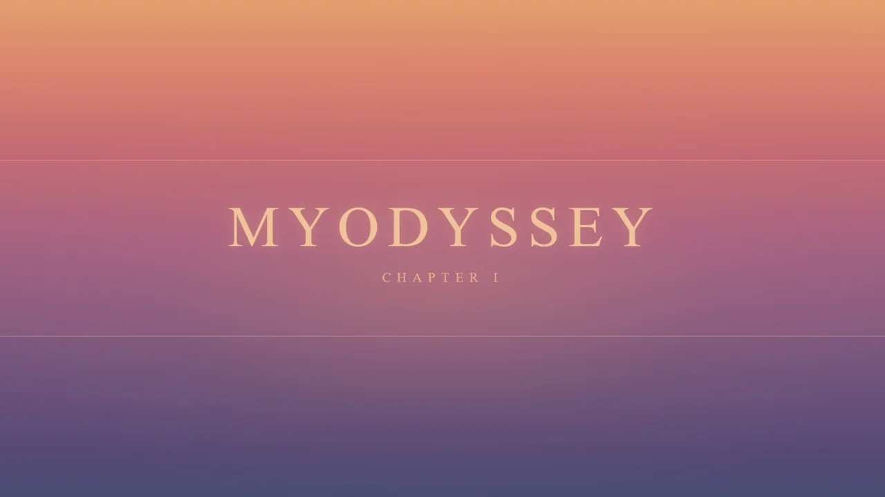
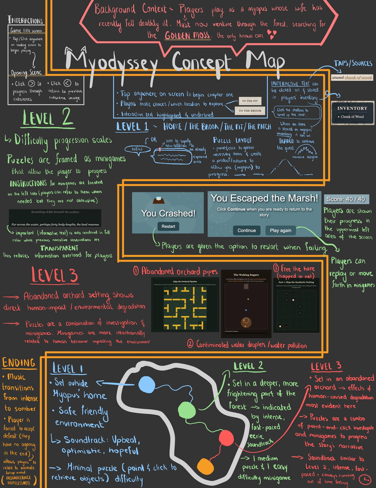
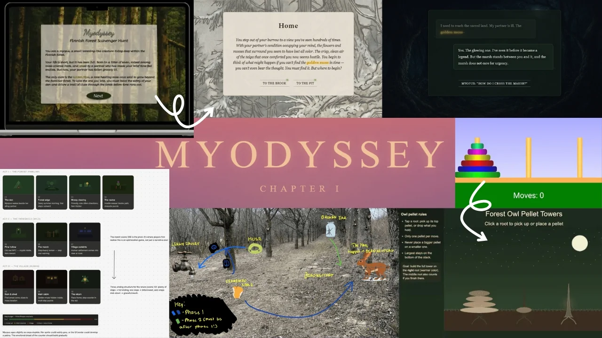

CS 247G · Design for Play
Myodyssey
An educational point-and-click adventure game about habitat loss and survival, told from the perspective of a woodland lemming.

How the Game Works
Myodyssey grew out of our group's assigned team name, "myopus", which is a type of small woodland lemming. We wanted to build a game centered on nature, vulnerability, and survival, where players feel like a helpless animal in a world increasingly shaped by human development.
Early on, we considered making a 1990s-style graphical point-and-click game, but realized that collaborating across a mix of hardware would make development and testing difficult. Instead, I developed our core concept as a browser-based, text-and-illustration adventure game in HTML and JavaScript. That choice let our team build smoothly together and kept the game approachable for people who don't usually play video games and want to jump right in.
We built each level around items and puzzles that move the journey forward. In level 1, players click on highlighted words in the story text to gather ingredients from the forest, cook a vegetable stew, and trade it with a beaver blocking their path. In levels 2 and 3, players complete minigames to keep moving deeper into the woods as the environment shifts from a safe, cozy storybook forest into a darker industrial landscape.
What I Built
On our five-person team, I helped shape the initial game concept, organize roles and tasks, and bring everyone's work together into one cohesive game.
I designed and coded the opening level of the game, including the interactive text mechanics, the inventory system, and the vegetable stew puzzle.
Because teammates built different levels in parallel, early versions looked and felt disconnected. Once the levels were completed, I combined them into a single package and updated the UI across the game so the style felt consistent from start to finish.
To help set the mood as the forest changes around the player, I composed, arranged, and mixed the game's five-track soundtrack (which you can listen to below!).




Testing & Iteration
We ran playtests across several versions of the game, testing with non-gamers, UX designers, and experienced gamers alike. We learned where players were getting stuck or losing the thread of the story.
Our first testers had trouble remembering which passages they had already read and didn't always realize which words were clickable. We updated the text so already-read passages grayed out, added small icons to areas with interactive items, and introduced an on-screen inventory so players could easily see what they had collected in level 1.
In later playtests, we noticed that our minigame speeds were tied to each computer's screen refresh rate, making some puzzles way too difficult. We also found that long dialogue sections could trap players who didn't have a mouse scroll wheel. We fixed the minigame timing so it ran at the same speed on every computer, added automatic scrolling with extra padding for long text, and clarified the instructions across our puzzles and minigames.
Working alongside a colorblind teammate, we made sure no puzzle relied on color alone to solve. After a playtester flagged flashing effects in a level 3 minigame, we redesigned the flashes so the game would be safe for photosensitive players.
During testing, a few testers who mentioned they didn't feel strongly about animals found the game's ending abrupt and sad. However, testers in our target audience (people who care about animals and enjoy story-driven games) told us the ending was the most impactful part of the experience. Instead of softening the ending, we decided to keep the story intact and focused on fixing bugs that would lessen its impact.
Playtest Video
Official Soundtrack
The five recordings listed above accompany this case study as individual MP3 files, in soundtrack order.